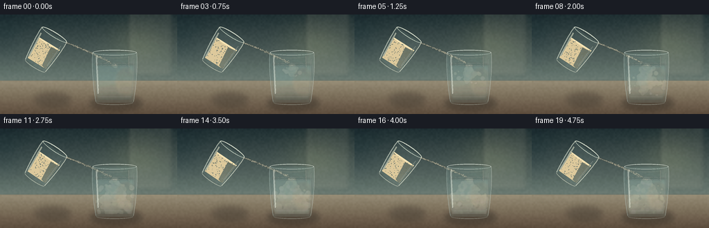
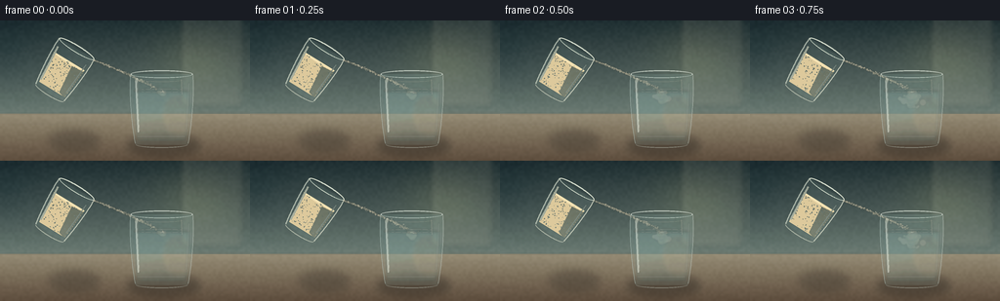
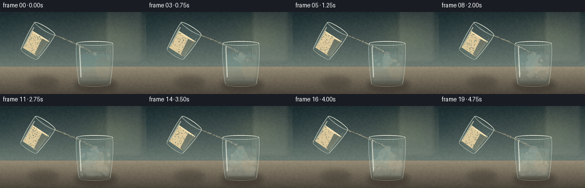
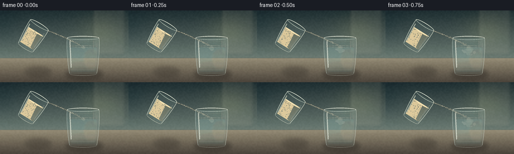
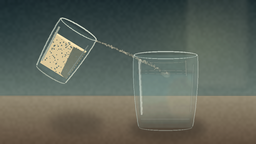
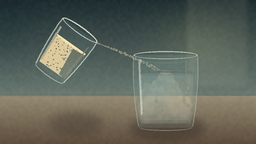
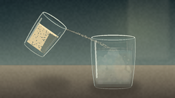

CODING AGENTS AS PIXEL WORLD MODELS
traex/DeepSeek-V4.1-Flash · material_0019
点击播放 · 原生 RGB 像素
逐轮保存的候选
回放视频、检查图与代码变化。
每份候选均可单独播放。实际图片检查记录在下方工具轨迹中。
候选 01播放与检查图
点击播放 · 原生 RGB 像素


展开代码变化
--- 上一保存版本
+++ 本次保存版本
@@ -0,0 +1,515 @@
+from pathlib import Path
+
+import numpy as np
+from PIL import Image, ImageDraw, ImageFilter
+
+import artifact_io
+
+
+CASE_DIR = Path(__file__).resolve().parent
+W, H, N, FPS = 256, 144, 20, 4.0
+S = 4
+RNG_SEED = 1907
+
+
+def sc(v):
+ return int(round(v * S))
+
+
+def box(coords):
+ return tuple(sc(v) for v in coords)
+
+
+def point(x, y):
+ return (sc(x), sc(y))
+
+
+def rgba(color):
+ if len(color) == 3:
+ return (*color, 255)
+ return color
+
+
+def composite(base, layer):
+ return Image.alpha_composite(base, layer)
+
+
+def blur(layer, radius):
+ return layer.filter(ImageFilter.GaussianBlur(max(0.2, radius * S)))
+
+
+def cubic(p0, p1, p2, p3, count=48):
+ t = np.linspace(0.0, 1.0, count)[:, None]
+ pts = (
+ (1 - t) ** 3 * np.array(p0)
+ + 3 * (1 - t) ** 2 * t * np.array(p1)
+ + 3 * (1 - t) * t**2 * np.array(p2)
+ + t**3 * np.array(p3)
+ )
+ return [tuple(p) for p in pts]
+
+
+def quadratic(p0, p1, p2, count=40):
+ t = np.linspace(0.0, 1.0, count)[:, None]
+ pts = (
+ (1 - t) ** 2 * np.array(p0)
+ + 2 * (1 - t) * t * np.array(p1)
+ + t**2 * np.array(p2)
+ )
+ return [tuple(p) for p in pts]
+
+
+def polygon_mask(size, pts):
+ mask = Image.new("L", size, 0)
+ draw = ImageDraw.Draw(mask)
+ draw.polygon([point(x, y) for x, y in pts], fill=255)
+ return mask
+
+
+def ellipse_mask(size, bounds):
+ mask = Image.new("L", size, 0)
+ ImageDraw.Draw(mask).ellipse(box(bounds), fill=255)
+ return mask
+
+
+def clipped(layer, mask):
+ result = Image.new("RGBA", layer.size, (0, 0, 0, 0))
+ result.paste(layer, (0, 0), mask)
+ return result
+
+
+def draw_soft_ellipse(canvas, bounds, color, blur_radius=0):
+ layer = Image.new("RGBA", canvas.size, (0, 0, 0, 0))
+ ImageDraw.Draw(layer).ellipse(box(bounds), fill=rgba(color))
+ if blur_radius:
+ layer = blur(layer, blur_radius)
+ return composite(canvas, layer)
+
+
+def value_noise(rng, width, height, coarse):
+ low = rng.random((max(2, height // coarse), max(2, width // coarse))).astype(np.float32)
+ image = Image.fromarray(np.uint8(np.clip(low, 0, 1) * 255), mode="L")
+ return np.asarray(image.resize((width, height), Image.Resampling.BICUBIC), dtype=np.float32) / 255.0
+
+
+def make_background():
+ width, height = W * S, H * S
+ rng = np.random.default_rng(RNG_SEED)
+ yy = np.linspace(0, 1, height, dtype=np.float32)[:, None, None]
+ xx = np.linspace(0, 1, width, dtype=np.float32)[None, :, None]
+
+ top = np.array([29, 44, 47], dtype=np.float32)
+ wall = np.array([104, 119, 111], dtype=np.float32)
+ horizon = np.array([151, 142, 119], dtype=np.float32)
+ table = np.array([91, 75, 59], dtype=np.float32)
+
+ wall_t = np.clip(yy / 0.66, 0, 1)
+ wall_rgb = top * (1 - wall_t) + wall * wall_t
+ table_t = np.clip((yy - 0.64) / 0.36, 0, 1)
+ table_rgb = horizon * (1 - table_t) + table * table_t
+ rgb = np.where(yy < 0.665, wall_rgb, table_rgb)
+
+ # A broad, diffused window light gives the transparent glass something to catch.
+ glow = np.exp(-(((xx - 0.78) / 0.27) ** 2 + ((yy - 0.28) / 0.36) ** 2) * 2.4)
+ rgb = rgb + glow * np.array([20, 18, 9], dtype=np.float32)
+ left_shadow = np.exp(-(((xx - 0.02) / 0.20) ** 2 + ((yy - 0.25) / 0.42) ** 2) * 2.5)
+ rgb = rgb - left_shadow * np.array([10, 8, 6], dtype=np.float32)
+
+ grain = value_noise(rng, width, height, 10) - 0.5
+ rgb += grain[..., None] * 6.0
+ image = Image.fromarray(np.uint8(np.clip(rgb, 0, 255)), mode="RGB").convert("RGBA")
+
+ # Soft kitchen geometry, deliberately out of focus.
+ shapes = Image.new("RGBA", image.size, (0, 0, 0, 0))
+ d = ImageDraw.Draw(shapes)
+ d.rounded_rectangle(box((185, -8, 249, 88)), radius=sc(5), fill=(215, 204, 174, 25))
+ d.rounded_rectangle(box((193, -2, 240, 82)), radius=sc(3), fill=(239, 226, 190, 18))
+ d.line([point(190, 3), point(190, 82)], fill=(244, 235, 214, 30), width=sc(1.4))
+ d.line([point(244, 2), point(244, 84)], fill=(36, 47, 43, 30), width=sc(1.2))
+ shapes = blur(shapes, 2.8)
+ image = composite(image, shapes)
+
+ # Countertop edge and faint marble movement.
+ edge = Image.new("RGBA", image.size, (0, 0, 0, 0))
+ de = ImageDraw.Draw(edge)
+ de.line([point(0, 95.2), point(256, 94.1)], fill=(226, 207, 171, 60), width=sc(0.9))
+ de.line([point(0, 96.1), point(256, 95.0)], fill=(42, 37, 31, 50), width=sc(0.7))
+ edge = blur(edge, 0.55)
+ image = composite(image, edge)
+
+ veins = Image.new("RGBA", image.size, (0, 0, 0, 0))
+ dv = ImageDraw.Draw(veins)
+ for y0, amp, phase, alpha in [(105, 1.5, 0.2, 22), (118, 1.1, 2.1, 17), (132, 0.8, 4.0, 14)]:
+ pts = []
+ for x in np.linspace(-5, 262, 75):
+ y = y0 + amp * np.sin(x * 0.045 + phase) + 0.55 * np.sin(x * 0.13 + phase)
+ pts.append(point(x, y))
+ dv.line(pts, fill=(225, 208, 177, alpha), width=sc(0.55))
+ veins = blur(veins, 0.75)
+ image = composite(image, veins)
+
+ # Contact shadows anchor both glasses.
+ shadows = Image.new("RGBA", image.size, (0, 0, 0, 0))
+ ds = ImageDraw.Draw(shadows)
+ ds.ellipse(box((50, 112, 102, 134)), fill=(28, 24, 20, 65))
+ ds.ellipse(box((130, 117, 205, 139)), fill=(28, 24, 20, 90))
+ shadows = blur(shadows, 4.2)
+ return composite(image, shadows)
+
+
+def draw_cloud_particles(canvas, particles, clip_mask):
+ layer = Image.new("RGBA", canvas.size, (0, 0, 0, 0))
+ d = ImageDraw.Draw(layer)
+ for p in particles:
+ fade = max(0.28, min(1.0, 1.0 - p["age"] / p["life"]))
+ alpha = int(p["alpha"] * fade)
+ if alpha <= 1:
+ continue
+ r = p["r"] * (1.0 + 0.18 * p["age"])
+ x, y = p["x"], p["y"]
+ color = p["color"] + (alpha,)
+ d.ellipse(box((x - r, y - r, x + r, y + r)), fill=color)
+ layer = blur(layer, 0.58)
+ return composite(canvas, clipped(layer, clip_mask))
+
+
+def draw_water_glass(background, cloud, frame_index):
+ canvas = background.copy()
+ cx = 165.5
+ top_y = 55.0
+ base_y = 126.5
+ surface_y = 72.0
+ outer_half_top = 32.0
+ outer_half_bottom = 27.0
+
+ left_outer = cubic(
+ (cx - outer_half_top, top_y),
+ (cx - 34.0, 76.0),
+ (cx - 30.0, 115.0),
+ (cx - outer_half_bottom, base_y),
+ 42,
+ )
+ bottom = [
+ (cx - outer_half_bottom + 1.0, base_y + 1.0),
+ (cx + outer_half_bottom - 1.0, base_y + 1.0),
+ ]
+ right_outer = list(
+ reversed(
+ cubic(
+ (cx + outer_half_top, top_y),
+ (cx + 34.0, 76.0),
+ (cx + 30.0, 115.0),
+ (cx + outer_half_bottom, base_y),
+ 42,
+ )
+ )
+ )
+ body_poly = left_outer + bottom + right_outer
+ body_mask = polygon_mask(canvas.size, body_poly)
+
+ # Rear glass wall: a cool, almost invisible tint.
+ rear = Image.new("RGBA", canvas.size, (0, 0, 0, 0))
+ ImageDraw.Draw(rear).polygon([point(x, y) for x, y in body_poly], fill=(155, 197, 194, 21))
+ canvas = composite(canvas, clipped(rear, body_mask))
+
+ # The water body follows the inner taper and remains translucent at the base.
+ inner_half = 28.5
+ inner_base_half = 24.3
+ water_poly = (
+ [(cx - inner_half, surface_y)]
+ + cubic((cx - inner_half, surface_y), (cx - 30.2, 82), (cx - 27.1, 116), (cx - inner_base_half, 123.5), 35)
+ + [(cx + inner_base_half, 123.5)]
+ + list(
+ reversed(
+ cubic(
+ (cx + inner_half, surface_y),
+ (cx + 30.2, 82),
+ (cx + 27.1, 116),
+ (cx + inner_base_half, 123.5),
+ 35,
+ )
+ )
+ )
+ )
+ water_mask = polygon_mask(canvas.size, water_poly)
+ water = Image.new("RGBA", canvas.size, (0, 0, 0, 0))
+ dw = ImageDraw.Draw(water)
+ dw.polygon([point(x, y) for x, y in water_poly], fill=(99, 155, 156, 47))
+
+ # Cooler lower water and a warm transmission patch from the window.
+ dw.ellipse(box((cx - 30, 103, cx + 29, 127)), fill=(68, 120, 123, 23))
+ dw.ellipse(box((cx + 2, 78, cx + 31, 117)), fill=(196, 194, 159, 13))
+ water = blur(water, 1.8)
+ canvas = composite(canvas, clipped(water, water_mask))
+
+ # Flour billows stay clipped to the water, preserving a clean glass silhouette.
+ canvas = draw_cloud_particles(canvas, cloud, water_mask)
+
+ # A faint milkiness grows as the suspended flour disperses.
+ milk_alpha = int(12 + frame_index * 0.8)
+ milk = Image.new("RGBA", canvas.size, (0, 0, 0, 0))
+ dm = ImageDraw.Draw(milk)
+ dm.polygon([point(x, y) for x, y in water_poly], fill=(226, 216, 188, milk_alpha))
+ milk = blur(milk, 2.2)
+ canvas = composite(canvas, clipped(milk, water_mask))
+
+ # Front face tint and inner walls.
+ front = Image.new("RGBA", canvas.size, (0, 0, 0, 0))
+ df = ImageDraw.Draw(front)
+ df.polygon([point(x, y) for x, y in body_poly], fill=(178, 212, 207, 10))
+ canvas = composite(canvas, clipped(front, body_mask))
+
+ detail = Image.new("RGBA", canvas.size, (0, 0, 0, 0))
+ dd = ImageDraw.Draw(detail)
+ dd.line([point(x, y) for x, y in left_outer], fill=(213, 235, 227, 105), width=sc(0.9))
+ dd.line([point(x, y) for x, y in right_outer], fill=(232, 240, 226, 112), width=sc(0.9))
+ dd.arc(box((cx - outer_half_bottom, base_y - 3.0, cx + outer_half_bottom, base_y + 4.2)), 4, 176, fill=(221, 232, 218, 112), width=sc(1.1))
+ dd.line([point(cx - 25, 119), point(cx + 24, 119)], fill=(224, 230, 210, 54), width=sc(0.8))
+ detail = blur(detail, 0.22)
+ canvas = composite(canvas, detail)
+
+ # Water meniscus and small surface ripples.
+ ripples = Image.new("RGBA", canvas.size, (0, 0, 0, 0))
+ dr = ImageDraw.Draw(ripples)
+ dr.ellipse(box((cx - inner_half, surface_y - 2.0, cx + inner_half, surface_y + 2.0)), outline=(224, 236, 221, 120), width=sc(0.75))
+ ripple_growth = min(8.0, 2.0 + frame_index * 0.38)
+ dr.ellipse(box((cx - ripple_growth, surface_y - 1.1, cx + ripple_growth, surface_y + 1.2)), outline=(244, 238, 209, 52), width=sc(0.6))
+ ripples = blur(ripples, 0.35)
+ canvas = composite(canvas, ripples)
+
+ # Strong glass rim with a second ellipse describing the wall thickness.
+ rim = Image.new("RGBA", canvas.size, (0, 0, 0, 0))
+ dq = ImageDraw.Draw(rim)
+ dq.ellipse(box((cx - outer_half_top, top_y - 4.1, cx + outer_half_top, top_y + 4.1)), outline=(232, 242, 229, 188), width=sc(1.25))
+ dq.arc(box((cx - outer_half_top + 1.5, top_y - 2.8, cx + outer_half_top - 1.5, top_y + 3.2)), 2, 178, fill=(95, 126, 121, 100), width=sc(0.65))
+ dq.arc(box((cx - 21, top_y + 3.5, cx + 22, top_y + 8.0)), 7, 174, fill=(237, 232, 205, 47), width=sc(0.7))
+ rim = blur(rim, 0.18)
+ canvas = composite(canvas, rim)
+
+ # Long highlights and small reflected window panes.
+ glints = Image.new("RGBA", canvas.size, (0, 0, 0, 0))
+ dg = ImageDraw.Draw(glints)
+ dg.line([point(cx - 26.5, 61), point(cx - 24.0, 115)], fill=(245, 250, 236, 125), width=sc(2.3))
+ dg.line([point(cx - 24.6, 62), point(cx - 22.6, 113)], fill=(255, 252, 226, 54), width=sc(0.85))
+ dg.line([point(cx + 27.7, 64), point(cx + 25.0, 112)], fill=(226, 241, 228, 74), width=sc(0.9))
+ dg.line([point(cx + 20, 60), point(cx + 20.7, 76)], fill=(255, 249, 220, 55), width=sc(1.2))
+ dg.ellipse(box((cx - 27.0, 58.5, cx - 23.8, 63.5)), fill=(255, 251, 228, 95))
+ glints = blur(glints, 0.42)
+ canvas = composite(canvas, glints)
+ return canvas, surface_y, cx
+
+
+def draw_source_glass(background, angle_deg, fill_level, frame_index):
+ canvas = background.copy()
+ cx, cy = 64.5, 52.0
+ layer = Image.new("RGBA", canvas.size, (0, 0, 0, 0))
+ d = ImageDraw.Draw(layer)
+
+ # Local coordinates around the glass center.
+ lx, ly = cx, cy
+ top_y, bottom_y = -27.0, 25.5
+ half_top, half_bottom = 21.0, 17.0
+ left = cubic(
+ (lx - half_top, ly + top_y),
+ (lx - 22.0, ly - 6.0),
+ (lx - 18.0, ly + 19.0),
+ (lx - half_bottom, ly + bottom_y),
+ 36,
+ )
+ right = list(
+ reversed(
+ cubic(
+ (lx + half_top, ly + top_y),
+ (lx + 22.0, ly - 6.0),
+ (lx + 18.0, ly + 19.0),
+ (lx + half_bottom, ly + bottom_y),
+ 36,
+ )
+ )
+ )
+ poly = left + [(lx + half_bottom - 1, ly + bottom_y + 1.2), (lx - half_bottom + 1, ly + bottom_y + 1.2)] + right
+ body_mask = polygon_mask(layer.size, poly)
+
+ d.polygon([point(x, y) for x, y in poly], fill=(161, 194, 183, 28))
+ # Flour occupies most of the glass and is visible through its clear wall.
+ flour_top = fill_level
+ inner_poly = [
+ (lx - 18.2, ly + flour_top),
+ (lx + 18.2, ly + flour_top),
+ (lx + 15.2, ly + 21.8),
+ (lx - 15.2, ly + 21.8),
+ ]
+ flour_mask = polygon_mask(layer.size, inner_poly)
+ flour = Image.new("RGBA", layer.size, (0, 0, 0, 0))
+ df = ImageDraw.Draw(flour)
+ df.polygon([point(x, y) for x, y in inner_poly], fill=(226, 204, 157, 238))
+ df.ellipse(box((lx - 18.3, ly + flour_top - 2.0, lx + 18.3, ly + flour_top + 2.2)), fill=(246, 225, 178, 246))
+ df.polygon(
+ [point(lx + 5, ly + flour_top + 3), point(lx + 18.0, ly + flour_top + 2), point(lx + 15.0, ly + 22.5), point(lx + 8, ly + 20.5)],
+ fill=(198, 170, 120, 54),
+ )
+ # Fine flour texture inside the source glass.
+ srng = np.random.default_rng(1200 + frame_index)
+ for _ in range(120):
+ x = srng.uniform(lx - 16.5, lx + 16.5)
+ y = srng.uniform(ly + flour_top + 1.5, ly + 21.0)
+ r = srng.uniform(0.18, 0.55)
+ a = int(srng.uniform(18, 58))
+ tone = int(srng.uniform(205, 251))
+ df.ellipse(box((x - r, y - r, x + r, y + r)), fill=(tone, tone - 16, tone - 47, a))
+ combined_mask = Image.fromarray(
+ np.minimum(np.asarray(flour_mask), np.asarray(body_mask)), mode="L"
+ )
+ layer = composite(layer, clipped(flour, combined_mask))
+
+ # Glass rim and wall highlights are part of the rotated object.
+ d = ImageDraw.Draw(layer)
+ d.line([point(x, y) for x, y in left], fill=(234, 242, 221, 150), width=sc(1.15))
+ d.line([point(x, y) for x, y in right], fill=(244, 246, 222, 165), width=sc(1.05))
+ d.ellipse(box((lx - half_top, ly + top_y - 3.8, lx + half_top, ly + top_y + 3.8)), outline=(241, 246, 226, 205), width=sc(1.3))
+ d.arc(box((lx - half_top + 1.2, ly + top_y - 2.5, lx + half_top - 1.2, ly + top_y + 3.0)), 5, 176, fill=(93, 121, 112, 115), width=sc(0.7))
+ d.line([point(lx - 17.7, ly - 19), point(lx - 15.3, ly + 19)], fill=(250, 249, 222, 130), width=sc(2.0))
+ d.line([point(lx + 16.6, ly - 18), point(lx + 14.3, ly + 17)], fill=(232, 241, 223, 72), width=sc(0.9))
+ d.arc(box((lx - half_bottom, ly + bottom_y - 2.5, lx + half_bottom, ly + bottom_y + 3.8)), 5, 174, fill=(238, 241, 217, 120), width=sc(1.1))
+
+ # Rotate around the object center. Positive screen-space rotation tips it clockwise.
+ rotated = layer.rotate(
+ -angle_deg,
+ resample=Image.Resampling.BICUBIC,
+ center=point(cx, cy),
+ fillcolor=(0, 0, 0, 0),
+ )
+ canvas = composite(canvas, rotated)
+
+ theta = np.deg2rad(angle_deg)
+ lip_local = np.array([half_top - 0.3, top_y + 1.0])
+ lip = np.array([cx, cy]) + np.array(
+ [lip_local[0] * np.cos(theta) - lip_local[1] * np.sin(theta),
+ lip_local[0] * np.sin(theta) + lip_local[1] * np.cos(theta)]
+ )
+ return canvas, tuple(lip)
+
+
+def draw_powder_stream(canvas, start, impact, frame_index):
+ rng = np.random.default_rng(5000 + frame_index)
+ p0 = start
+ p1 = (start[0] + 21.0, start[1] + 7.0)
+ p2 = (impact[0] - 4.5, impact[1] - 2.0)
+ path = quadratic(p0, p1, p2, 80)
+
+ ribbon = Image.new("RGBA", canvas.size, (0, 0, 0, 0))
+ dr = ImageDraw.Draw(ribbon)
+ dr.line([point(x, y) for x, y in path], fill=(236, 217, 174, 88), width=sc(1.45), joint="curve")
+ ribbon = blur(ribbon, 0.75)
+ canvas = composite(canvas, ribbon)
+
+ grains = Image.new("RGBA", canvas.size, (0, 0, 0, 0))
+ dg = ImageDraw.Draw(grains)
+ for _ in range(165):
+ t = rng.uniform(0.0, 1.0) ** 0.84
+ idx = int(t * (len(path) - 1))
+ x, y = path[idx]
+ spread = 0.25 + 0.95 * t
+ x += rng.normal(0, spread)
+ y += rng.normal(0, spread * 0.7)
+ r = rng.uniform(0.20, 0.72)
+ a = int(rng.uniform(42, 165) * (1.0 - 0.25 * t))
+ tone = int(rng.uniform(222, 251))
+ dg.ellipse(box((x - r, y - r, x + r, y + r)), fill=(tone, tone - 17, tone - 51, a))
+
+ # A soft dust halo follows the narrow stream.
+ dust = Image.new("RGBA", canvas.size, (0, 0, 0, 0))
+ dd = ImageDraw.Draw(dust)
+ for x, y in path[18::7]:
+ r = rng.uniform(1.2, 2.4)
+ dd.ellipse(box((x - r, y - r * 0.6, x + r, y + r * 0.6)), fill=(234, 218, 183, 13))
+ dust = blur(dust, 1.7)
+ canvas = composite(canvas, dust)
+ return composite(canvas, grains)
+
+
+def draw_impact(canvas, impact, frame_index):
+ rng = np.random.default_rng(8400 + frame_index)
+ impact_layer = Image.new("RGBA", canvas.size, (0, 0, 0, 0))
+ di = ImageDraw.Draw(impact_layer)
+ # Surface disturbance at the stream entry point.
+ for _ in range(16):
+ angle = rng.uniform(0, 2 * np.pi)
+ radius = rng.uniform(1.0, 8.0)
+ x = impact[0] + np.cos(angle) * radius
+ y = impact[1] + 1.2 + np.sin(angle) * radius * 0.25
+ r = rng.uniform(0.35, 1.0)
+ di.ellipse(box((x - r, y - r * 0.45, x + r, y + r * 0.45)), fill=(245, 235, 204, int(rng.uniform(35, 92))))
+ impact_layer = blur(impact_layer, 0.42)
+ return composite(canvas, impact_layer)
+
+
+def simulate_particles():
+ rng = np.random.default_rng(RNG_SEED + 44)
+ states = []
+ per_frame = []
+ cx, surface_y = 165.5, 72.0
+ dt = 1.0 / FPS
+ for frame in range(N):
+ for p in states:
+ p["age"] += dt
+ p["vy"] += 2.1 * dt
+ p["vx"] *= 0.982
+ p["x"] += p["vx"] * dt + 0.32 * np.sin(p["age"] * 2.7 + p["phase"]) * dt
+ p["y"] += p["vy"] * dt
+ if p["x"] < cx - 26.5:
+ p["x"] = cx - 26.5
+ p["vx"] = abs(p["vx"]) * 0.35
+ if p["x"] > cx + 26.5:
+ p["x"] = cx + 26.5
+ p["vx"] = -abs(p["vx"]) * 0.35
+ if p["y"] > 121.5:
+ p["y"] = 121.5
+ p["vy"] *= 0.3
+ spawn_count = 23 + int(frame * 0.6)
+ for _ in range(spawn_count):
+ r = rng.uniform(1.0, 3.5)
+ states.append(
+ {
+ "x": cx + rng.normal(0, 1.35),
+ "y": surface_y + rng.uniform(0.2, 2.8),
+ "vx": rng.normal(0, 8.0),
+ "vy": rng.uniform(7.5, 20.0),
+ "r": r,
+ "alpha": int(rng.uniform(24, 53)),
+ "age": 0.0,
+ "life": rng.uniform(8.5, 13.5),
+ "phase": rng.uniform(0, 2 * np.pi),
+ "color": (int(rng.uniform(228, 246)), int(rng.uniform(218, 236)), int(rng.uniform(190, 212))),
+ }
+ )
+ per_frame.append([dict(p) for p in states])
+ return per_frame
+
+
+def main():
+ background = make_background()
+ particles_by_frame = simulate_particles()
+ frames = []
+ for frame_index in range(N):
+ t = frame_index / (N - 1)
+ angle = 31.5 + 3.8 * t
+ fill_level = -12.3 + 1.5 * t
+ canvas, lip = draw_source_glass(background, angle, fill_level, frame_index)
+ impact = (165.5 + 1.3 * np.sin(frame_index * 0.55), 72.0)
+ canvas = draw_powder_stream(canvas, lip, impact, frame_index)
+ canvas, surface_y, water_cx = draw_water_glass(canvas, particles_by_frame[frame_index], frame_index)
+ canvas = draw_impact(canvas, (water_cx, surface_y), frame_index)
+
+ # A very slight exposure lift keeps the action readable without flattening the glass.
+ array = np.asarray(canvas.convert("RGB"), dtype=np.float32)
+ array = np.clip(array * 1.018 + 1.2, 0, 255)
+ frame = Image.fromarray(np.uint8(array), mode="RGB").resize((W, H), Image.Resampling.LANCZOS)
+ frames.append(np.asarray(frame, dtype=np.uint8))
+
+ artifact_io.save(np.stack(frames), CASE_DIR)
+ print(f"Wrote {N} frames to {CASE_DIR}")
+
+
+if __name__ == "__main__":
+ main()
候选 02播放与检查图
点击播放 · 原生 RGB 像素


展开代码变化
--- 上一保存版本
+++ 本次保存版本
@@ -101,7 +101,7 @@
top = np.array([29, 44, 47], dtype=np.float32)
wall = np.array([104, 119, 111], dtype=np.float32)
horizon = np.array([151, 142, 119], dtype=np.float32)
- table = np.array([91, 75, 59], dtype=np.float32)
+ table = np.array([73, 66, 57], dtype=np.float32)
wall_t = np.clip(yy / 0.66, 0, 1)
wall_rgb = top * (1 - wall_t) + wall * wall_t
@@ -261,8 +261,8 @@
detail = Image.new("RGBA", canvas.size, (0, 0, 0, 0))
dd = ImageDraw.Draw(detail)
- dd.line([point(x, y) for x, y in left_outer], fill=(213, 235, 227, 105), width=sc(0.9))
- dd.line([point(x, y) for x, y in right_outer], fill=(232, 240, 226, 112), width=sc(0.9))
+ dd.line([point(x, y) for x, y in left_outer], fill=(225, 243, 232, 155), width=sc(1.1))
+ dd.line([point(x, y) for x, y in right_outer], fill=(238, 246, 229, 164), width=sc(1.1))
dd.arc(box((cx - outer_half_bottom, base_y - 3.0, cx + outer_half_bottom, base_y + 4.2)), 4, 176, fill=(221, 232, 218, 112), width=sc(1.1))
dd.line([point(cx - 25, 119), point(cx + 24, 119)], fill=(224, 230, 210, 54), width=sc(0.8))
detail = blur(detail, 0.22)
@@ -271,7 +271,7 @@
# Water meniscus and small surface ripples.
ripples = Image.new("RGBA", canvas.size, (0, 0, 0, 0))
dr = ImageDraw.Draw(ripples)
- dr.ellipse(box((cx - inner_half, surface_y - 2.0, cx + inner_half, surface_y + 2.0)), outline=(224, 236, 221, 120), width=sc(0.75))
+ dr.ellipse(box((cx - inner_half, surface_y - 2.0, cx + inner_half, surface_y + 2.0)), outline=(232, 242, 221, 155), width=sc(0.9))
ripple_growth = min(8.0, 2.0 + frame_index * 0.38)
dr.ellipse(box((cx - ripple_growth, surface_y - 1.1, cx + ripple_growth, surface_y + 1.2)), outline=(244, 238, 209, 52), width=sc(0.6))
ripples = blur(ripples, 0.35)
@@ -280,7 +280,7 @@
# Strong glass rim with a second ellipse describing the wall thickness.
rim = Image.new("RGBA", canvas.size, (0, 0, 0, 0))
dq = ImageDraw.Draw(rim)
- dq.ellipse(box((cx - outer_half_top, top_y - 4.1, cx + outer_half_top, top_y + 4.1)), outline=(232, 242, 229, 188), width=sc(1.25))
+ dq.ellipse(box((cx - outer_half_top, top_y - 4.1, cx + outer_half_top, top_y + 4.1)), outline=(244, 249, 232, 226), width=sc(1.45))
dq.arc(box((cx - outer_half_top + 1.5, top_y - 2.8, cx + outer_half_top - 1.5, top_y + 3.2)), 2, 178, fill=(95, 126, 121, 100), width=sc(0.65))
dq.arc(box((cx - 21, top_y + 3.5, cx + 22, top_y + 8.0)), 7, 174, fill=(237, 232, 205, 47), width=sc(0.7))
rim = blur(rim, 0.18)
@@ -289,9 +289,9 @@
# Long highlights and small reflected window panes.
glints = Image.new("RGBA", canvas.size, (0, 0, 0, 0))
dg = ImageDraw.Draw(glints)
- dg.line([point(cx - 26.5, 61), point(cx - 24.0, 115)], fill=(245, 250, 236, 125), width=sc(2.3))
+ dg.line([point(cx - 26.5, 61), point(cx - 24.0, 115)], fill=(250, 253, 237, 171), width=sc(2.3))
dg.line([point(cx - 24.6, 62), point(cx - 22.6, 113)], fill=(255, 252, 226, 54), width=sc(0.85))
- dg.line([point(cx + 27.7, 64), point(cx + 25.0, 112)], fill=(226, 241, 228, 74), width=sc(0.9))
+ dg.line([point(cx + 27.7, 64), point(cx + 25.0, 112)], fill=(236, 246, 230, 108), width=sc(0.95))
dg.line([point(cx + 20, 60), point(cx + 20.7, 76)], fill=(255, 249, 220, 55), width=sc(1.2))
dg.ellipse(box((cx - 27.0, 58.5, cx - 23.8, 63.5)), fill=(255, 251, 228, 95))
glints = blur(glints, 0.42)
可观测工具轨迹
实际执行的命令与返回图片。
命令 1exit 0
/bin/bash -c "pwd && rg --files -g 'prompt.txt' -g 'GENERATION_RULES.md' -g 'task_spec.json' -g '"'!**/.git/**'"'"
命令 2exit 0
/bin/bash -c 'git status --short && find . -maxdepth 2 -type f | sort | head -200'
命令 3exit 0
/bin/bash -c 'cat prompt.txt'
命令 4exit 0
/bin/bash -c 'cat GENERATION_RULES.md'
命令 5exit 0
/bin/bash -c 'cat task_spec.json'
命令 6exit 0
/bin/bash -c "sed -n '1,240p' artifact_io.py"
命令 7exit 1
/bin/bash -c 'python generate.py'
命令 8exit 1
/bin/bash -c 'python generate.py'
命令 9exit 0
/bin/bash -c 'python generate.py'
命令 10exit 0
/bin/bash -c 'mkdir -p candidates/candidate_01 && cp -a frames inspection.png transition_check.png pixels.npz index.html candidates/candidate_01/'
命令 11exit 0
/bin/bash -c 'python generate.py'
命令 12exit 0
/bin/bash -c 'mkdir -p candidates/candidate_02 && cp -a frames inspection.png transition_check.png pixels.npz index.html candidates/candidate_02/'
命令 13exit 0
/bin/bash -c "python - <<'PY'
from pathlib import Path
import json
import numpy as np
from PIL import Image
frames = [np.asarray(Image.open(p).convert('RGB')) for p in sorted(Path('frames').glob('*.png'))]
a = np.stack(frames)
print('shape:', a.shape, 'dtype:', a.dtype)
print('frame sizes:', sorted(set((im.shape[1], im.shape[0]) for im in frames)))
d = np.abs(np.diff(a.astype(np.int16), axis=0))
print('mean adjacent delta:', round(float(d.mean()), 3))
print('min/max adjacent delta:', int(d.min()), int(d.max()))
print('changed pixels per transition:', [int(np.any(x "'!= 0, axis=2).sum()) for x in d])
print('"'nonblank luminance range:', int(a.mean(axis=(1,2,3)).min()), int(a.mean(axis=(1,2,3)).max()))
print('pixels.npz:', np.load('pixels.npz')['pixels'].shape)
print('index bytes:', Path('index.html').stat().st_size)
print('html caption:', json.loads(Path('index.html').read_text().split('const data = ',1)[1].split(';',1)[0])['caption'] if 'const data = ' in Path('index.html').read_text() else 'see payload')
PY"视觉工具实际返回图片 1

视觉工具实际返回图片 2

视觉工具实际返回图片 3

视觉工具实际返回图片 4

视觉工具实际返回图片 5

视觉工具实际返回图片 6

保存候选 2 份；完成命令 13 次；可验证图片返回 6 张。原始 API 响应与完整日志保留在本地。